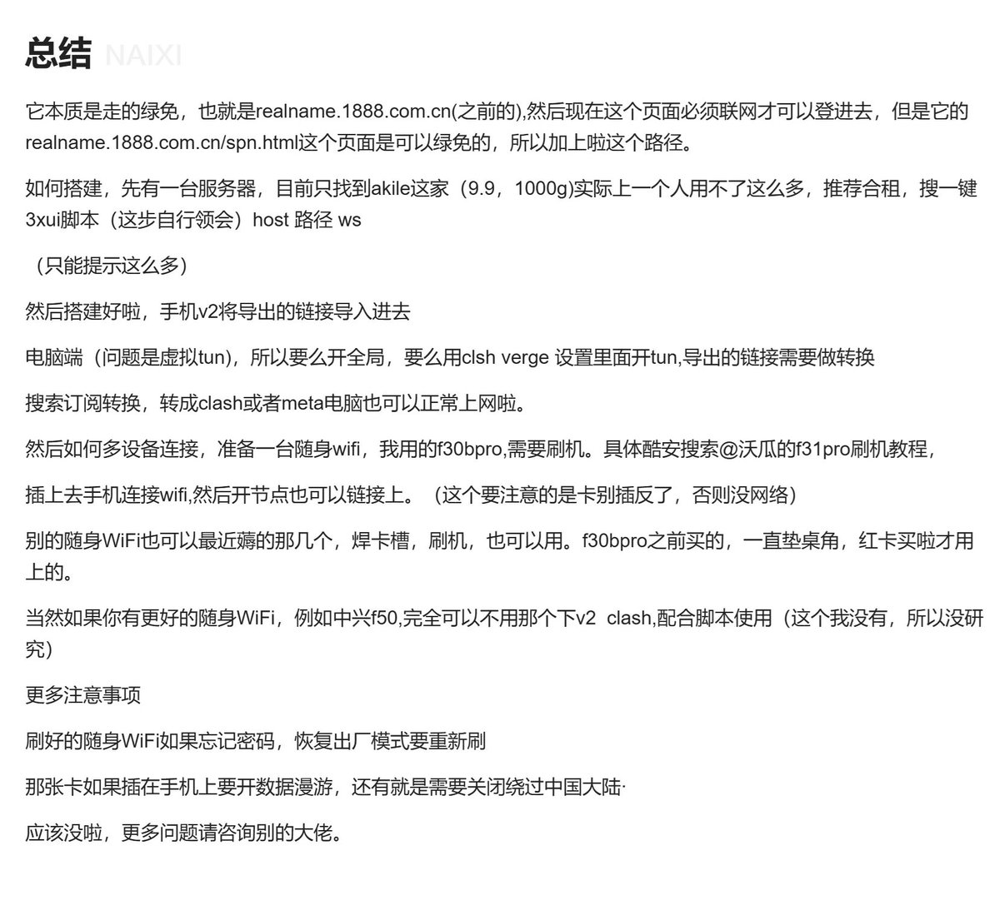
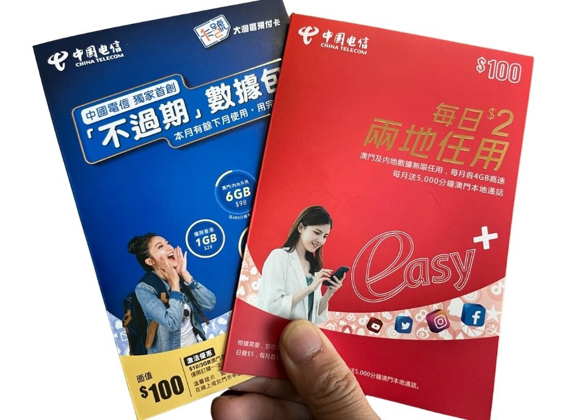
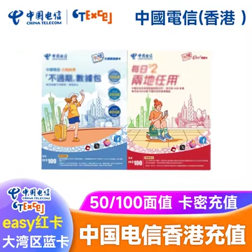

听说中国电信澳门/香港的绿通ws拉闸了，仅能在香港、澳门、中国大陆三地使用，国际漫游需付押金
不过Akile家的10块/月VPS也是量大管饱，养活了不少通过v2rayの秘术上网的大湾区跨境人士，它们普遍是用root过后的设备、魅族Flyme等共享VPN热点
如果正常用，每半年的保号维护费是50元，也就是一年一百。
不过澳门版可以前往中国电信门店更换为eSIM，不需要上台，若要求可换一家门店。更换后请谨慎保留此eSIM二维码所在的PDF文档，旧设备联网移除后二维码可复用添加至新设备。首次免费，若涉及补卡、换回实体卡，每次30块钱
总之ctmo和cthk这几年都蛮出名的，除了ctmo提供的珠海电信号码非虚拟号，其余港澳运营商的内地号码在办理境内银行业务时均会出现不通过的情况，办理的必要性不大
不过Akile家的10块/月VPS也是量大管饱，养活了不少通过v2rayの秘术上网的大湾区跨境人士，它们普遍是用root过后的设备、魅族Flyme等共享VPN热点
如果正常用，每半年的保号维护费是50元，也就是一年一百。
不过澳门版可以前往中国电信门店更换为eSIM，不需要上台，若要求可换一家门店。更换后请谨慎保留此eSIM二维码所在的PDF文档，旧设备联网移除后二维码可复用添加至新设备。首次免费，若涉及补卡、换回实体卡，每次30块钱
总之ctmo和cthk这几年都蛮出名的，除了ctmo提供的珠海电信号码非虚拟号，其余港澳运营商的内地号码在办理境内银行业务时均会出现不通过的情况，办理的必要性不大


